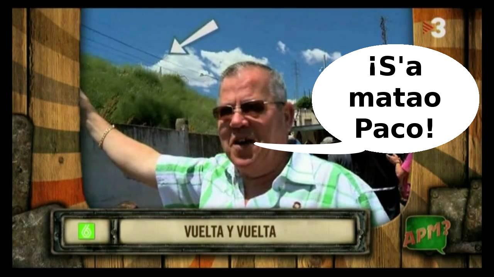

Ahuakemonala: Teknologiaz baliatutako egitasmo komunikatiboa
Durangoko Azokako Kabi@ gunea
2016-12-05

Zer da Ahuakemonala egitasmoa?
- 2015ean Ondarrun martxan jarritako egitasmo komunikatiboa
- Ondarruko Udalak sustatua
- Helburua: Ondarrutar hizkera prestigiatzea eta belaunaldi ezberdinetako herritarrek eguneroko jardunean erabiltzea.
- Ondarruko kasua berezia da, euskararen erabilera datuak oso onak baitira, baina herri hizkera benetan gordetzea eta prestigiatzea da helburua

Zein dira egitasmoaren ezaugarri nagusiak?
- Teknologia komunikazioaren zerbitzura jartzen da.
- Herria, komunitatea eraikitzea da helburua, herritarren parte-hartzeaz baliatuta burutzea komunikazio prozesua bera
- Edukiaren transmisioa, kasu honetan herri hizkera aktibo bihurtzen da
- Modu ludikoan planteatzen da komunikazio prozesua: lehiaketa, umorea bilatzen duen APPa…

Egitasmoaren elementu teknologiko-komunikatiboak
-
Esketx lehiaketa: Herritarrek egindako esketxak, herri hizkerari buruz.
Egitasmoaren elementu teknologiko-komunikatiboak
Egitasmoaren elementu teknologiko-komunikatiboak
- Lehiaketa: Herri hizkerari buruzko galdera-erantzun lehiaketa

Egitasmoaren elementu teknologiko-komunikatiboak
- Euskararen Eguneko pintxo-potea: Gastronomiarekin erlazioa duten hizkera adierazpideak bildu ziren (aurten ere errepikatu da esperientzia)
Egitasmoaren elementu teknologiko-komunikatiboak
- Erdigunea: www.ahuakemonala.eus
Egitasmoaren elementu teknologiko-komunikatiboak
-
2016ko Errege Eguneko Bertso Saioa
Urtero egin modura, Ondarroako hitzen inguruko ariketa proposatu zien gai jartzaileak. Horretarako, Ahuakemonala aplikazioan agertzen diren hainbat esaera eta berba erabili zituzten, puntuka aritzeko.
Irudia: Lea-Artibai eta Mutrikuko HITZA
Egitasmoaren elementu teknologiko-komunikatiboak
- Sare sozialen erabilera
Lo konkorra sartzen baatzu... Eztakixu ze einbizun? Ba baja #ahuakemonala aplikaziñoi, momatxoi! https://t.co/xuV5SmJfep
— ahuakemonala (@ahuakemonala) 2015(e)ko azaroak 23
Herria, komunitatea, parte-hartzea
- Herritarrak izan ziren protagonista esketx lehiaketan, euren parte-hartzea beharrezkoa zen
- APParen osaketa herriko Radixu irrati lokalaren kolaborazioarekin gauzatu zen, herritarrei herri hizkeraren adierazpideak grabatzera joateko deia eginez, haur, gazte zein heldu bildu ziren bertan. Ikastetxeetako gazte eta haurrek ere parte hartu zuten grabaketan.
-
Herri hizkeraren barneratzea ahalbidetzeko lehiaketan ere beharrezkoa izan zen herritarren parte-hartzea
Komunikazio egitasmoaren sekuentzia logikoa
- ESKETX LEHIAKETA: Herritarrek herri hizkerari buruz ezagutzen dutena JASO
- APP-a: Azterlan formaletik zein herri ezagutzatik abiatuta egindako aukeraketatik eta modu kolektiboan landutako bildumarekin EZAGUTZA BARNERATU
- LEHIAKETA: Ikasitakoa FROGAN JARRI
- PINTXO-POTEA + BERTSO SAIOA: Esperientziaren SOZIALIZAZIOA
Emaitzak
- Esketx lehiaketa: 7 lan jaso ziren
- APPa: 70 ondarrutarrek grabatutako 624 esamolde, ia 900 deskarga
- Lehiaketa: 150 parte-hartzaile eta 613 partida
- Bertso saioa: Ondarruko Beikozini beteta
- Webgunea: 6.600 bisitari eta 82.000 orri zerbitzatuta
Ondorio nagusiak
- Udalak aspalditik duen helburu honek udal esparrua gainditu du
- Herri eragileekin lankidetzan aritzeak arazoan sakontzea dakar eta herritarrek gaiarekiko hurbilpen handiagoa lortzea
- Komunikazio egitasmoak ez du arazoa konpontzen, baina sentsibilizazioan sakontzea lortu da eta gai horrekin lanean jarraitzeko testuingurua eraikitzen lagundu du
Ahuakemonala aplikazioa
Nola sortu zen ideia?
- Kataluniako TV3eko APM: Alguna pregunta més? saioaren txorakerien zaleak gara lankideok
APMren aplikazioa
-
APMren aplikazioak programako audio ezagunenak entzuteko aukera ematen du

Ezaugarri teknikoak
- Apache Cordova erabiliz sortutako aplikazio hibridoa da
- AngularJSn oinarritutako Ionic framework-arekin garatua
- Web-eko teknologiak erabiliz: HTML, CSS eta JavaScript
- SQLite datu-basea erabiltzen du gailuan datuak gordetzeko
Mila esker!
-
Aurkezpena:
-
Aurkezpenaren iturburu-kodea (GNU GPLv3):
-
Aurkezpena garatzeko Reveal.js erabili dugu:
http://lab.hakim.se/reveal-js/
MIT lizentzia duen software librea da